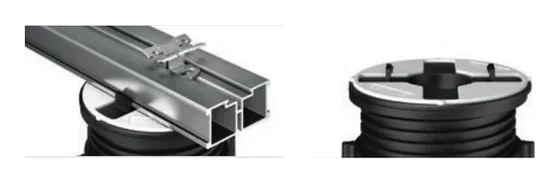

Heads
Head for aluminium joist
Two-component head with pre-formed flaps that receive the aluminium joist without additional fastening.
- Size
- Ø 110 mm
- Compatibility
- PR, SE, NM (Star.T, SB, EH12 also)
- Codes
- E035100010 (PR-SE) · E034000010 (NM)